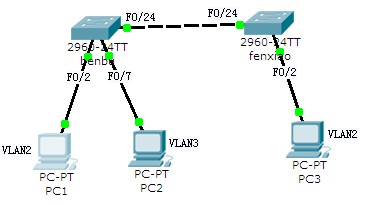

实训任务2-1：实现Vlan间通信(1)
PC1（192.168.2.1）和PC3（192.168.2.3）在VLAN1，PC2（192.168.2.2）在VLAN2。要求PC1不能与PC2互相通信，PC1能与PC3通信。

1．配置两台交换机的主机名分别为benbu和fenxiao。
交换机（benbu）
Switch> enable
Switch# configure terminal
Switch(config)# hostname benbu
交换机（fenxiao）
Switch> enable
Switch# configure terminal
Switch(config)# hostname fenxiao
2． 创建VTP管理域cqddvtpdomain，并将交换机benbu设置为VTP服务器，将交换机fenxiao设置为VTP Client工作模式。
交换机（benbu）
benbu# vlan database
benbu(vlan)# vtp domain cqddvtpdomain
benbu(vlan)# vtp server
交换机（fenxiao）
fenxiao# vlan database
fenxiao(vlan)# vtp domain cqddvtpdomain
fenxiao(vlan)# vtp client
3． 在名为benbu的交换机上创建id号为2．3．4的3个VLAN，VLAN的名称分别为student、teacher和office。
交换机（benbu）
benbu(config)# vlan 2
benbu(config-vlan)# name student
benbu(config)# vlan 3
benbu(config-vlan)# name teacher
benbu(config)# vlan 4
benbu(config-vlan)# name office
4．查看fenxiao交换机上的VLAN信息。
交换机（fenxiao）
fenxiao# show vlan
5．将benbu交换机的2～6号端口和fenxiao交换机的2～4号端口划入VLAN2，将benbu交换机的7～9号端口和fenxiao交换机的5～9号端口划入VLAN3，将benbu交换机的10～12号端口和fenxiao交换机的10～12号端口划入VLAN4。
交换机（benbu）
benbu(config)# interface range f0/2–6
benbu(config-if-range)# switchport mode access
benbu(config-if-range)# switchport access vlan 2
benbu(config)# interface range f0/7-9
benbu(config-if-range)# switchport mode access
benbu(config-if-range)# switchport access vlan 3
benbu(config)# interface range f0/10-12
benbu(config-if-range)# switchport mode access
benbu(config-if-range)# switchport access vlan 4
交换机（fenxiao）
fenxiao(config)# interface range f0/5-9
fenxiao(config-if-range)# switchport mode access
fenxiao(config-if-range)# switchport access vlan 3
fenxiao(config)# interface range f0/10-12
fenxiao(config-if-range)# switchport mode access
fenxiao(config-if-range)# switchport access vlan 4
6．将交换机benbu的F0/24端口设置为trunk端口，将交换机fenxiao的F0/24端口设置为trunk端口。
交换机（fenxiao）
fenxiao(config)# int f0/24
fenxiao(config-if)# switchport mode trunk
交换机（benbu）
benbu(config)# int f0/24
benbu(config-if)# switchport mode trunk
7．查看VTP 信息。
交换机（fenxiao）
fenxiao# show vtp status
交换机（benbu）
benbu# show vtp status
8．测试连通性。
①配置PC机的IP地址和子网掩码
PC1的IP地址：192.168.2.1，子网掩码：255.255.255.0；
PC2的IP地址：192.168.2.2，子网掩码：255.255.255.0；
PC3的IP地址：192.168.2.3，子网掩码：255.255.255.0。
②测试计算机的连通性
PC1
PC> ping 192.168.2.3
PC> ping 192.168.2.2
结论：PC1 可以ping通 PC3，PC1 不可以ping通 PC2。